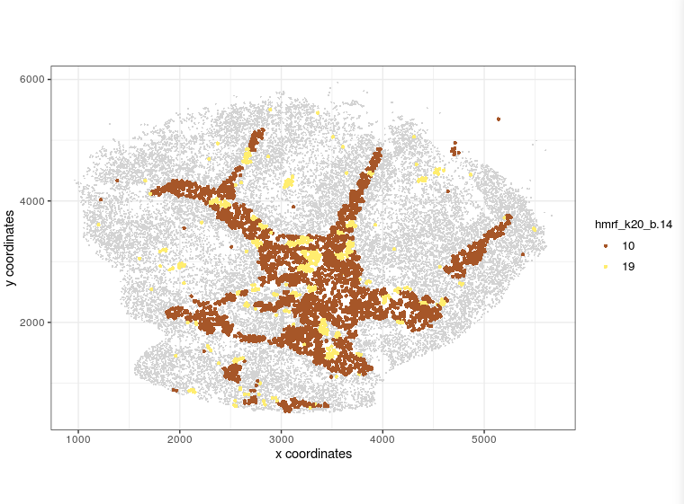

slideSeq Dataset - Part 2. Clustering and Spatial Domains
Clustering analysis
library(Giotto)
#data loading
bead_positions <- fread(file="2019_slideseq_cerebellum/cell_locations/BeadLocationsForR.csv")
expr_matrix<-fread(file="2019_slideseq_cerebellum/raw_data/MappedDGEForR.csv")
expr_mat = as.matrix(expr_matrix[,-1]);rownames(expr_mat) = expr_matrix$Row
Slide_test <- createGiottoObject(raw_exprs = expr_mat, spatial_locs = bead_positions[,.(xcoord, ycoord)])
#normal giotto steps
#filtering of genes and cells, removal of mitochondrial genes
filterCombinations(Slide_test, expression_thresholds = c(1, 1), gene_det_in_min_cells = c(20, 20, 20), min_det_genes_per_cell = c(20, 32, 100))
visPlot(gobject = Slide_test, point_size=0.5)
Slide_test<-filterGiotto(gobject=Slide_test, gene_det_in_min_cells=20, min_det_genes_per_cell=20)
non_mito_genes = grep(pattern = 'mt-', Slide_test@gene_ID, value = T, invert = T)
non_mito_or_blood_genes = grep(pattern = 'Hb[ab]', non_mito_genes, value = T, invert = T)
Slide_test = subsetGiotto(gobject = Slide_test, gene_ids = non_mito_or_blood_genes)
visPlot(gobject = Slide_test, point_size=0.5)
dim(Slide_test@raw_exprs)
#dimensional reduction
Slide_test <- normalizeGiotto(gobject = Slide_test, scalefactor = 10000, verbose = T)
Slide_test <- addStatistics(gobject = Slide_test)
Slide_test <- calculateHVG(gobject = Slide_test, method = 'cov_groups', zscore_threshold = 0.5, nr_expression_groups = 10)
gene_metadata = fDataDT(Slide_test)
featgenes = gene_metadata[hvg == 'yes' & perc_cells > 0.5 & mean_expr_det > 1]$gene_ID
featgenes
featgenes = gene_metadata[hvg == 'yes']$gene_ID
featgenes
Slide_test <- runPCA(gobject = Slide_test, expression_values = 'custom', genes_to_use = featgenes, scale_unit = F)
Slide_test <- adjustGiottoMatrix(gobject = Slide_test, expression_values = c('normalized'), batch_columns = NULL, covariate_columns = c('nr_genes', 'total_expr'), return_gobject = TRUE, update_slot = c('custom'))
Slide_test <- runPCA(gobject = Slide_test, expression_values = 'custom', genes_to_use = featgenes, scale_unit = F)
signPCA(Slide_test, genes_to_use = featgenes, scale_unit = F, scree_ylim = c(0,0.3))
plotPCA(gobject=Slide_test)
Slide_test <- runUMAP(Slide_test, dimensions_to_use=1:9, n_components=2)
plotUMAP(gobject=Slide_test, point_size=1)
#leiden clustering
Slide_test<-createNearestNetwork(gobject=Slide_test, dimensions_to_use=1:9, k=20)
Slide_test<-doLeidenCluster(gobject=Slide_test, resolution=0.5, n_iterations=10, name="leiden", python_path="/n/app/python/3.6.0/bin/python3")
plotUMAP(gobject=Slide_test, cell_color="leiden", point_size=1, plot_method="ggplot")
plotMetaDataHeatmap(Slide_test, expression_values="custom", metadata_cols=c("leiden"))
markers_scarn=findMarkers_one_vs_all(gobject=Slide_test, method="scran", expression_values="normalized", cluster_column="leiden", min_genes=5)
markergenes_scran = unique(markers_scarn[, head(.SD, 8), by="cluster_ID"][["gene_ID"]])
plotMetaDataHeatmap(Slide_test, expression_values="normalized", metadata_cols=c("leiden"), selected_genes=markergenes_scran)
Filtering (filterCombinations)
After genes and cells filtering, visPlot
calculateHVG
significant PCs (signPCA)
plotUMAP
Leiden clustering
plotMetaHeatmap
Spatial analysis
spatial_genes<-calculate_spatial_genes_python(gobject=Slide_test, expression_values="norm", python_path="/n/app/python/3.6.0/bin/python3", rbp_p=0.95, examine_top=0.05)
Slide_test<-createSpatialNetwork(gobject=Slide_test, k=7, maximum_distance=100, minimum_k=1)
visPlot(gobject=Slide_test, show_network=T, sdimx="sdimx", sdimy="sdimy", point_size=1, network_color="blue")
Top spatial genes
createSpatialNetwork
Spatial expression patterns of a few top genes
Spatial domains (Hidden markov random field, HMRF)
#select top 250 genes from spatial_genes
sp<-spatial_genes[1:250]
#start HMRF
HMRF<-doHMRF(gobject=Slide_test, expression_values="normalized", spatial_genes=sp, k=20, betas=c(0,1,20), output_folder="result_k20", python_path="/n/app/python/3.6.0/bin/python3", zscore="rowcol", tolerance=1e-5)
#add HMRF results
source("~/addHMRF.R")
Slide_test<-addHMRF2(gobject=Slide_test, name="test",betas=c(0,1.0,20), betas_to_add=c(0, 10, 11, 14), hmrf_name="hmrf", python_path="/n/app/python/3.6.0/bin/python3", output_data="result_k20/result.spatial.zscore", k=20)
visPlot(gobject=Slide_test, cell_color="hmrf_k20_b.14", point_size=2)
visPlot(gobject=Slide_test, cell_color="hmrf_k20_b.0", point_size=2)
#cluster relationship
showClusterHeatmap(gobject=Slide_test, cluster_column="hmrf_k20_b.14")
#visualize selected clusters
visPlot(gobject = Slide_test, plot_method = 'ggplot', sdimx = 'sdimx', sdimy = 'sdimy', cell_color = 'hmrf_k20_b.14', point_size=2, select_cell_groups = c(1, 12, 3, 7, 8))
visPlot(gobject = Slide_test, plot_method = 'ggplot', sdimx = 'sdimx', sdimy = 'sdimy', cell_color = 'hmrf_k20_b.14', point_size=2, select_cell_groups = c(10, 19))
visPlot(gobject = Slide_test, plot_method = 'ggplot', sdimx = 'sdimx', sdimy = 'sdimy', cell_color = 'hmrf_k20_b.14', point_size=2, select_cell_groups = c(14, 16, 4, 5, 9))
visPlot(gobject = Slide_test, plot_method = 'ggplot', sdimx = 'sdimx', sdimy = 'sdimy', cell_color = 'hmrf_k20_b.14', point_size=2, select_cell_groups = c(15, 17, 18))
visPlot(gobject = Slide_test, plot_method = 'ggplot', sdimx = 'sdimx', sdimy = 'sdimy', cell_color = 'hmrf_k20_b.14', point_size=2, select_cell_groups = c(11, 13, 2, 20, 6))
visPlot (HMRF, k20, b14)
visPlot (No spatial clustering, purely clustering based on expression)
showClusterHeatmap
visPlot (selected HMRF clusters 1 12 3 7 8)
visPlot (selected HMRF clusters 10 19)

visPlot (selected HMRF clusters 14 16 4 5 9)
visPlot (selected HMRF clusters 15 17 18)
visPlot (selected HMRF clusters 11 13 2 20 6)